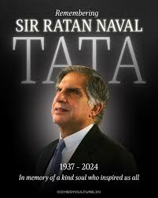
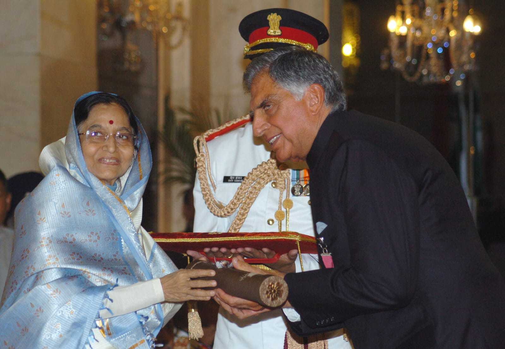
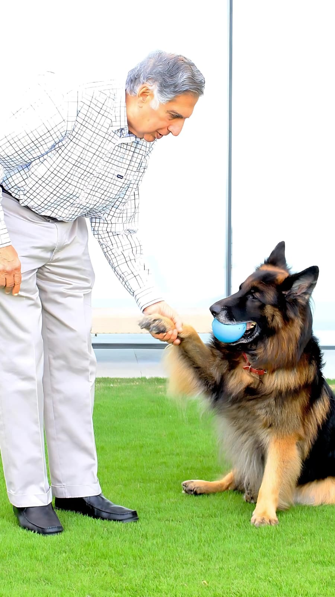
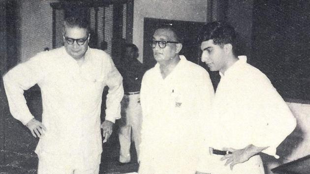

Born on 28 December 1937 in Surat, Gujarat, Ratan Naval Tata was raised in a family with an extraordinary legacy. Adopted by his grandfather Navajbai Tata after his parents separated, he grew up with a deep sense of duty, humility, and responsibility — values that would define the entire course of his life.
Ratan Tata believed that wealth was a trust held for society. Through the Tata Trusts — one of the oldest and largest philanthropic foundations in Asia — he directed billions toward transforming the lives of ordinary Indians.


